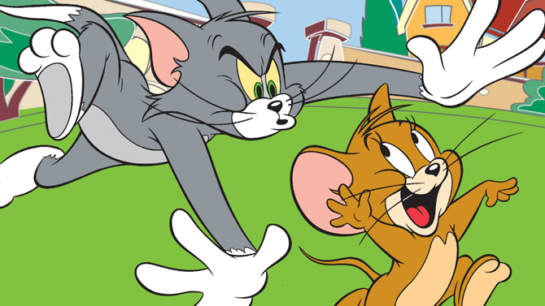
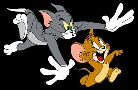
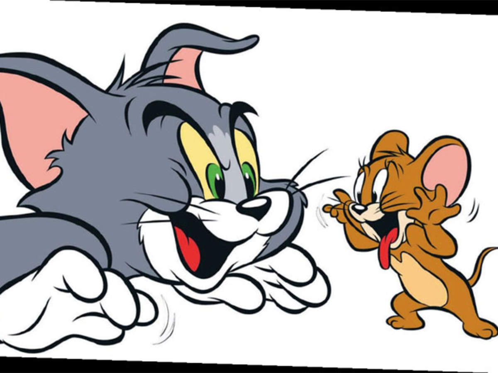

TOM AND JERRY:
Jerry was small but it was the fearless attitude combined with the urge to fight
Tom that made all the difference, over and over again.
Jerry alone outwits Tom every single time and there's a powerful lesson to capture:
even the big and powerful can fall apart if you have wits and the right attitude.
MORAL:- A little spark of yourself enough to keep you going forward.
Life is often like Tom and Jerry. They tease each other, knock down each other,
irritate each other but can't live without each other.
So, no matter what life throws at you;
keep moving forward, for always


